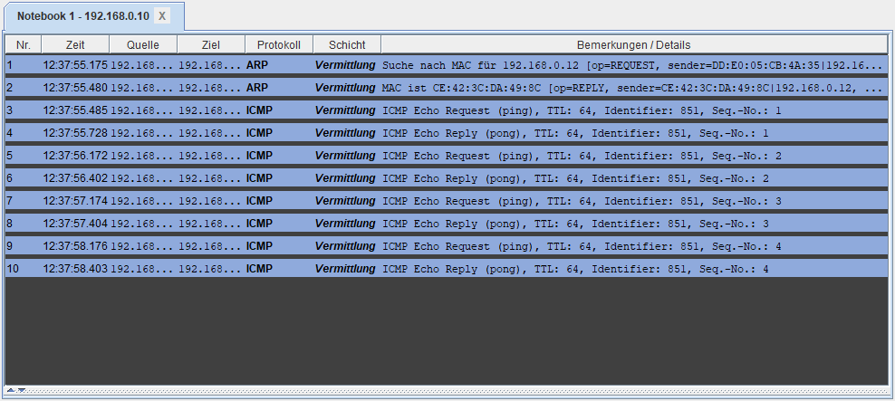

Ping – Pong
Den Befehl kennst du schon. Aber was passiert dabei eigentlich im Netz? Schau genau hin – einmal klappt es, einmal nicht.
MERKE
- Ein Ping besteht aus zwei Teilen: der Anfrage und der Antwort.
- Kommt die Antwort zurück, ist das andere Gerät erreichbar.
- Kommt nichts zurück, meldet Filius .
Den Paketen zusehen
So liest du den Datenaustausch

Jede Zeile ist ein Paket. Quelle ist der Absender, Ziel der Empfänger.
- Echo Request (ping) – die Anfrage: „Bist du da?“
- Echo Reply (pong) – die Antwort: „Ja, ich bin da.“
Die ersten beiden Zeilen (ARP) gehören nicht zum Ping. Dort fragt der Rechner erst in das ganze Netz: „Wer hat diese Adresse?“
Zwei Rechner antworten nicht
Im Netz der Startdatei sollen vier Rechner erreichbar sein:
PC 1
192.168.0.10
PC 2
192.168.0.11
PC 3
192.168.0.12
PC 4
192.168.0.13
So war es geplant. Aber wer das Netz gebaut hat, hat zwei Fehler gemacht.
Antwort oder Timeout?
Fünf Fälle. Überlege jedes Mal: Kommt auf den Ping eine Antwort?
Ein Ping fragt nur „Bist du da?“. Jetzt schickst du eine richtige Nachricht von einem Rechner zum anderen.
Erkläre in eigenen Worten. Die KI gibt dir einen kurzen Hinweis – nicht die Lösung.
Das nimmst du mit
Wortspeicher
Alle Fachbegriffe dieser Einheit auf einen Blick.
Wie geht es weiter?
Bisher haben sich die Rechner nur gegrüßt. In der nächsten Einheit bietet ein Rechner etwas an: Er wird zum Server – und die anderen rufen bei ihm eine Webseite ab.